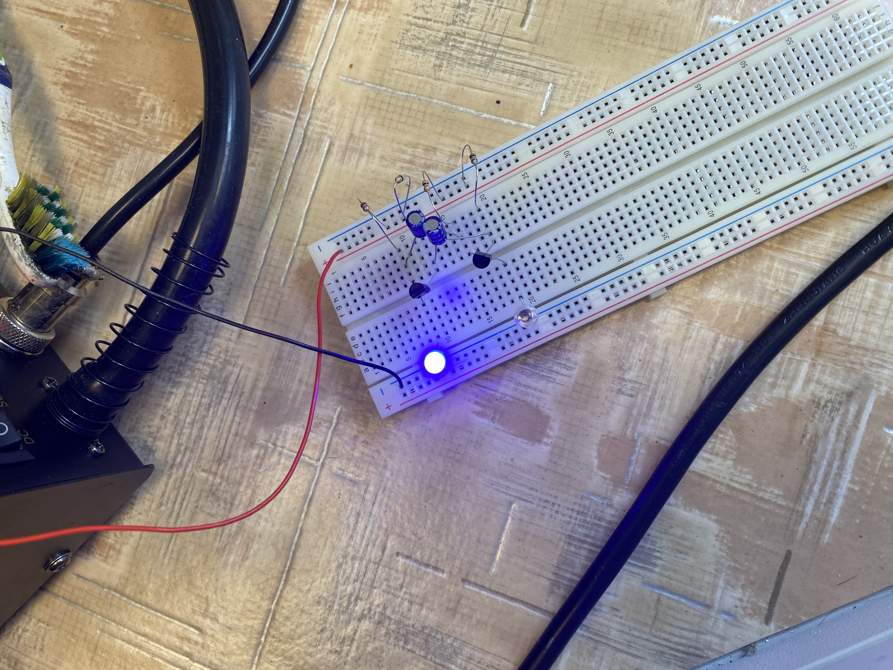
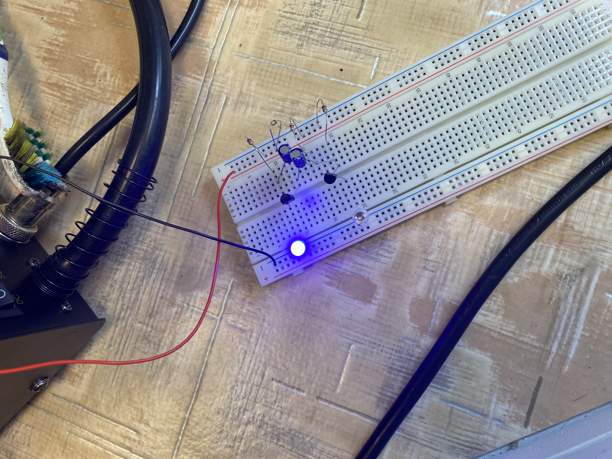

Először építettünk áramkört a való életben, ezért igencsak új dolog volt ez.
Kaptunk hozzá egy rajzot, ami alapján meg kell építenünk.
El is kezdtem felrakni a breadbordra az alkatrészeimet, de a Tranzisztorral nem békültem ki. Nem tudtam a lábaival mit kezdeni, így segítséget kértem.
Megismertette velem tanárúr hogy melyik láb, hogyan működik. Ezután próbálkoztam a lábkiosztásokkal és sikerült összeraknom helyesen.
Így sikerült megépíteni egy olyan áramkört, aminél hol a kék led világít, hol a piros.
Nagyon örültem ennek, viszont legközelebb több figyelmet kell szenteljek annak, hogy a lábakról tájékozódom, ugyanis a problémát ez jelentette, hisz sokkal hamarabb készen lehettem volna vele.
A folyamatot élveztem, sokmindent tanultam belőle.